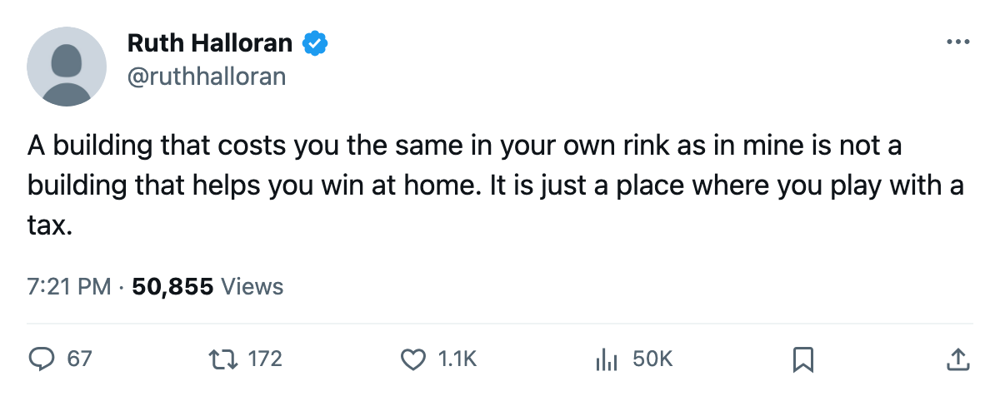
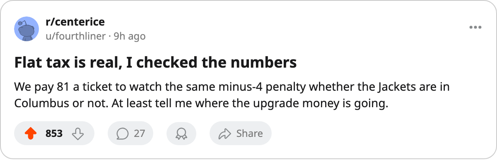

Flat at minus-4: CBJ's building taxes them the same in their own rink as in yours
Five clubs run an identical facility penalty at home and on the road. Columbus is one of them, and it is one of 21 that has not touched a single track since December.
 Ruth HalloranBusiness of hockey · The Building
Ruth HalloranBusiness of hockey · The Building
 Columbus Blue Jackets runs the same building penalty in Columbus as it does on the road. Practice rink sits at level 1, which costs all attributes 4 points at home. Travel budget sits at level 1, which costs all attributes 4 points on the road. Neither track behaves differently depending on venue, so the building gives the men zero home-ice advantage and zero road disadvantage.
Columbus Blue Jackets runs the same building penalty in Columbus as it does on the road. Practice rink sits at level 1, which costs all attributes 4 points at home. Travel budget sits at level 1, which costs all attributes 4 points on the road. Neither track behaves differently depending on venue, so the building gives the men zero home-ice advantage and zero road disadvantage.
The spread between the best and worst building is 9 points.  Detroit Red Wings gets a +1 boost from a level-5 practice rink.
Detroit Red Wings gets a +1 boost from a level-5 practice rink.  Colorado Avalanche gets nothing from its level-4 travel budget, meaning the road costs them less than staying home.
Colorado Avalanche gets nothing from its level-4 travel budget, meaning the road costs them less than staying home.  Philadelphia Flyers runs the same flat minus-4 that CBJ does. Five clubs in total carry no venue differentiation:
Philadelphia Flyers runs the same flat minus-4 that CBJ does. Five clubs in total carry no venue differentiation:  Nashville Predators (flat at minus-2), PHI,
Nashville Predators (flat at minus-2), PHI,  Chicago Blackhawks,
Chicago Blackhawks,  Mighty Ducks of Anaheim and CBJ, all flat at minus-4.
Mighty Ducks of Anaheim and CBJ, all flat at minus-4.
| club | practice (home) | travel (road) | home record | away record |
|---|---|---|---|---|
| NSH | 2 (-2) | 2 (-2) | 23-8 | 16-14 |
| PHI | 1 (-4) | 1 (-4) | 17-14 | 9-21 |
| CHI | 1 (-4) | 1 (-4) | 10-20 | 12-20 |
| ANA | 1 (-4) | 1 (-4) | 21-10 | 12-19 |
| CBJ | 1 (-4) | 1 (-4) | 15-14 | 12-20 |
The records show what you would expect: without a building to push them one way, these clubs do not split evenly between home and away. CBJ is 15-14 in Columbus, 12-20 elsewhere. A 6-point gap exists even though the venue terms are identical. Whatever separates their home record from their road record is not coming from the practice rink or the travel budget.
The one thing the building cannot do here
The locker room at CBJ sits at level 0, the floor. The tuning file gives that a minus-10 modifier on morale. Nothing in this pipeline reads it. The scouting room sits at level 1, which feeds trade valuation, a number no one outside the building can see. Coaching, medical, marketing and legal are switched off entirely in this build. Of the ten tracks a general manager can spend against, four do nothing at all and two carry curves that no rating model reads.
The club average morale at CBJ is 85.7, the lowest of 30 rosters. The next-lowest is  Calgary Flames at 86.8. I cannot say the locker room causes it, because the locker room does nothing here. I can note both facts sit in the same column.
Calgary Flames at 86.8. I cannot say the locker room causes it, because the locker room does nothing here. I can note both facts sit in the same column.
The one thing the building can do, and CBJ has not tried
Since the league began filing upgrade records on 2004-12-04, 11 upgrades have landed across 9 clubs.  Toronto Maple Leafs raised travel and workout.
Toronto Maple Leafs raised travel and workout.  Washington Capitals raised equipment.
Washington Capitals raised equipment.  Tampa Bay Lightning raised practice on 2005-02-23, the most recent move on the ledger. Three of the 11 went to dead tracks:
Tampa Bay Lightning raised practice on 2005-02-23, the most recent move on the ledger. Three of the 11 went to dead tracks:  Vancouver Canucks and
Vancouver Canucks and  Florida Panthers both spent on scouting, Chicago Blackhawks spent on the locker room.
Florida Panthers both spent on scouting, Chicago Blackhawks spent on the locker room.
CBJ has made no upgrade of any kind. Not on a live track, not on a dead one. They sit at a live sum of minus-18, tied for the 3rd-worst in the league alongside ANA, Florida Panthers,  Minnesota Wild and
Minnesota Wild and  St. Louis Blues. Only
St. Louis Blues. Only  Los Angeles Kings at minus-19 is worse.
Los Angeles Kings at minus-19 is worse.
CBJ books $56.28M in revenue against $49.21M payroll, for $12.26M profit. Their 13,975 average attendance at $81 per seat is 20th in the league. Brent O'Connor sits 15th of 30 general managers by prestige at 429, which moved 4 points since the last edition. The club is profitable, the building is among the worst, and nothing has moved in 84 days of record-keeping.
What they are playing with
The on-the-ice term, which averages the facility effect across a roster's own ratings, sits at minus-3.63 for Columbus. Only  New York Islanders at minus-3.65 is worse. The live sum of minus-18 means every CBJ player carries that penalty into every game, at home or away, and will until someone raises a practice rink or a travel budget or an equipment room. Each of those moves one point of live sum per level, applied per player per game.
New York Islanders at minus-3.65 is worse. The live sum of minus-18 means every CBJ player carries that penalty into every game, at home or away, and will until someone raises a practice rink or a travel budget or an equipment room. Each of those moves one point of live sum per level, applied per player per game.
Today, 2005-02-26, they play a game and feel minus-4. They will feel minus-4 tomorrow too, and the day after, at home or in someone else's building. The tax does not follow them home. The tax lives at home.

